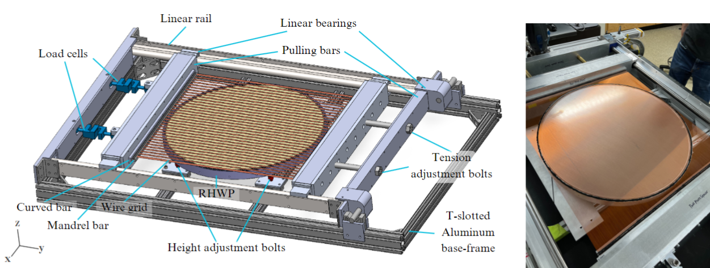

Hi there! I am Carol!
I am a Astronomy PhD Candidate at Johns Hopkins University, working as a researcher in the Cosmology Large Angular Scale Surveyor (CLASS) collaboration. For over 3 years, I've been focused on designing, characterising and building novel scientific instruments for precise astronomical observations. I also analyze the data from these instruments to understand and correct for their systematic effects.
Discover my work and experience below!
Projects
Click into each project below to learn more!
The cryogenic receiver is a critical component in the CLASS telescope where it cools down superconducting detectors down to ~100mK for high sensitivity measurements of the Cosmic Microwave Background (CMB) radiation. I built and characterised the cryogenic receiver for the CLASS 90GHz telescope, and led team efforts to deploy the telescope in June 2025.
Key Responsibilities & Tasks:
- Coordinated and led efforts for the deployment, assembly, and successful commissioning of the CLASS 90GHz telescope in the Atacama Desert in Chile
- Collaborated with external manufacturers to facilitate the production of components for the cryogenic receiver
- Performed multiple cooling and warming cycles of the cryogenic system to ensure reliable functionality.
- Conducted position measurements using a portable Coordinate Measuring Machine (FaroArm) to validate optical component alignment
The reflective half-wave plate (HWP) is a polarization modulator designed for the CLASS telescope that modulates incoming polarization signal, thus separating the faint polarization of the Cosmic Microwave Background from the much stronger instrumental noise. The HWP consists of a wire grid and a reflective surface, which is rotated to modulate the polarization signal. I took part in the design, characterization, and deployment of the reflective HWP.
Key Responsibilities & Tasks:
- Designed and modeled the mounting structure of HWP using SolidWorks
- Designed a stretcher frame for tensioning the wire grid of the HWP
- Performed Structral analysis of the HWP mounting structure and the strecther frame using SolidWorks FEA simulations
- Collaborated with external manufacturers to facilitate the production of components for the HWP
- Characterised the specification compliance of the HWP
The model of the HWP
The model of the stretcher frame, which is used to tension the HWP wire grid
FEA simulation results for the deformation of the stretcher frame.
See relevant publication: Design and characterization of a 60-cm reflective half-wave plate for the CLASS 90 GHz band telescope (Shi, R., et al. 2024)
Key Responsibilities & Tasks:
- Designed and modeled various optical components and scientific instruments using SolidWorks.
- Performed structural analysis (static, frequency) using SolidWorks Simulation to ensure integrity under operational loads.
- Developed and validated Finite Element Simulations (FEA) using COMSOL Multiphysics for radiation and heat transfer in cryogenic systems, predicting thermal performance and optimizing insulation.
- Developed automated scientific data acquisition and instrument control systems using LabView and Arduino.
- Coordinated technical efforts (7 students/scientists) for the deployment, assembly, and commissioning of a large scientific instrument in a remote environment (Atacama Desert in Chile).
- Applied analytical techniques to evaluate instrument performance and identify systematic effects from observational data.
Visuals

Example of a component from the CLASS instrument system.

Result from COMSOL thermal simulation for a cryogenic component.
Outcome: Contributed to the successful design, simulation, deployment, and commissioning of the CLASS instruments, enabling cutting-edge cosmological observations.
Key Responsibilities & Tasks:
- Designed and built a four-bar linkage quadruped robot
- Fabricated custom parts, including 3D printing and manual machining.
- Collaborated closely with a team of 20+ students across electronics and software divisions to integrate mechanical, electrical, and control systems.
Visuals

The finished quadruped robot built for the Robocon competition.
Demonstration of robot finishing the competition path.
Outcome: The robot design contributed to winning the Hong Kong Robocon Best Design Award and achieving Second-runner up in 2019.
I designed and programmed an instant photo printer that prints B&W photos from photos taken by a camera using a STM32 microcontroller.
Key Responsibilities & Tasks:
- store BMP images taken by the camera into an SD card
- convert 24-bit colored image from the camera to a binary B/W value
- send the binary data to the thermal printer via UART
Programmed STM32 using C to
Demonstration video
I designed a cooling system for a astronomical single-photon detector to minimise thermal noise.
Key Responsibilities & Tasks:
- Intergrated a CPU cooler, thermoelectric cooler and 3D print enclousure to achieve active cooling of the detector
- Implemented temperature tracking and logging using Arduino
- Programmed LabVIEW for visualization of detector signals

Set up of the cooling system